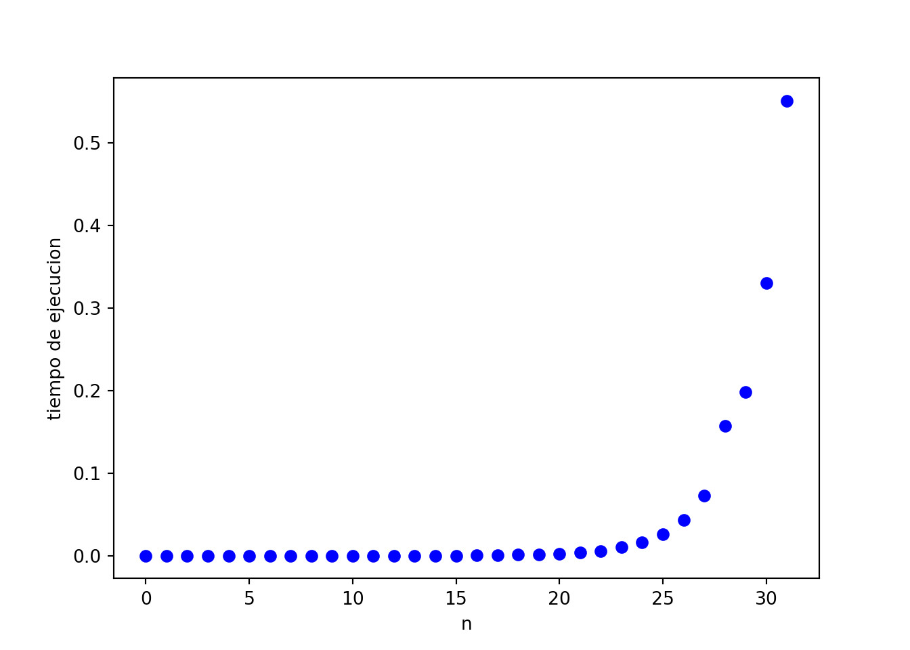
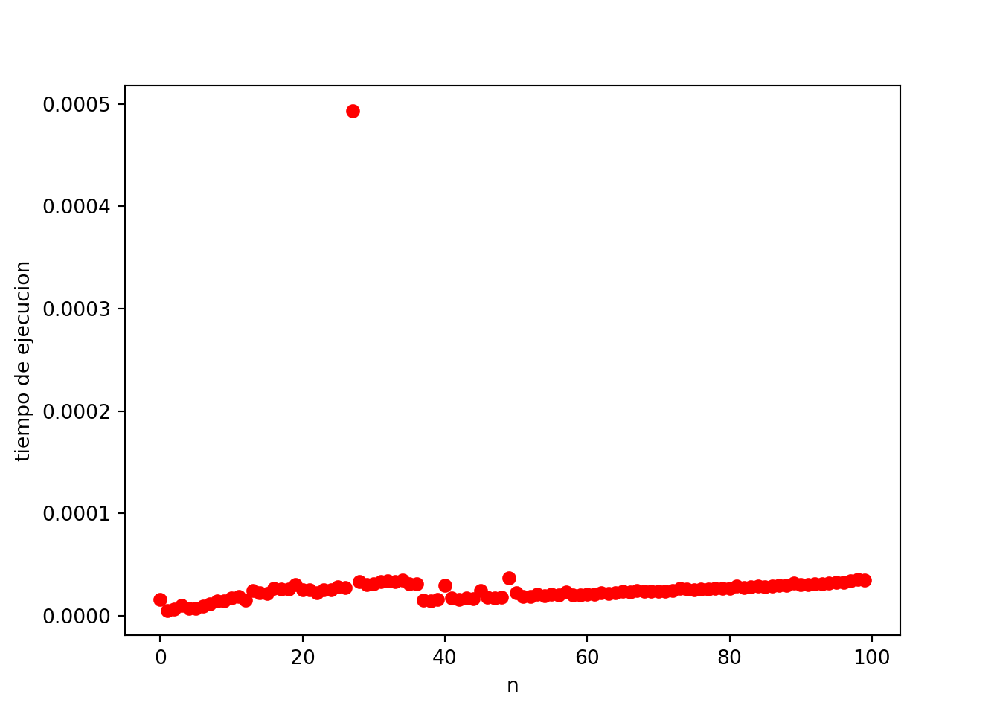

Recursión, y su versión particular para hacer problemas de fuerza bruta “Backtracking” es una herramienta versátil, pero es un arma de doble filo…
Calcule el n-ésimo termino de la sucesión de fibonacci \(f(0) = 0\), \(f(1) = 1\) y \(f(n + 2) = f(n + 1) + f(n)\).
Los primeros términos de esta sucesión son: \(0, 1, 1, 2, 3, 5, 8, 13, \dots\)
def fib(n):
if n == 0: return 0
if n == 1: return 1
return fib(n - 1) + fib(n - 2)for i in range(10):
print(fib(i))## 0
## 1
## 1
## 2
## 3
## 5
## 8
## 13
## 21
## 34import time
import matplotlib.pyplot as plt
N_MAX = 32
points = [0] * N_MAX
for i in range(N_MAX):
points[i] -= time.perf_counter()
fib(i)
points[i] += time.perf_counter()plt.plot(points, 'ob')
plt.xlabel("n")
plt.ylabel("tiempo de ejecucion")
plt.show()
¿Por qué Fibonacci? Tal vez ahora te preguntes que tiene Fibonacci de especial que no tienen otros problemas de recursión.
La respuesta es sobrelapamiento de estados, quiere decir que hay algunos \(n\) que se evaluan muchas veces, veamos:
def fib_count(n, cnt):
cnt[n] += 1
if n == 0: return 0
if n == 1: return 1
return fib_count(n-1, cnt) + fib_count(n-2, cnt)cnt = [0] * N_MAX
fib_count(N_MAX-1, cnt)## 1346269plt.plot(cnt)
plt.xlabel('fib(n) calculados')
plt.ylabel('frecuencia')
plt.show()Hay valores que se calculan ¡¡¡más de \(1200000\) veces!!!
Sí mi problema es calcular los estados muchas veces, pues porqué no guardarlos para futuras peticiones? veamos como esta simple idea funciona:
def fib_memo(n, vis, memo):
if vis[n] == True: return memo[n]
vis[n] = True
answer = -1
if n == 0: answer = 0
elif n == 1: answer = 1
else: answer = fib_memo(n-1, vis, memo) + fib_memo(n-2, vis, memo)
memo[n] = answer
return answerimport sys
sys.setrecursionlimit(100000)
M_MAX = 100
points = [0] * M_MAX
for i in range(M_MAX):
points[i] -= time.perf_counter()
memo = [-1] * M_MAX
vis = [False] * M_MAX
fib_memo(i, vis, memo)
points[i] += time.perf_counter()plt.plot(points, 'or')
plt.xlabel('n')
plt.ylabel('tiempo de ejecucion')
plt.show()
¡¡¡Mi complejidad ahora es lineal!!! ¿Es esto acaso mágia?
La complejidad ahora es lineal por un simple hecho, los estados no se calculan más de una vez…
def fib_dp(n, vis, memo, cnt):
cnt[n] += 1
if vis[n]:
return memo[n] #si ya ha sido calculado lo devuelvo
vis[n] = True #lo voy a calcular, falta guardarlo
ans = -1
if n == 0: ans = 0
elif n == 1: ans = 1
else: ans = fib_dp(n-1, vis, memo, cnt) + fib_dp(n-2, vis, memo, cnt)
memo[n] = ans #como lo he calculado, lo guardo
return ansM_MAX = 1000
memo = [-1] * M_MAX
vis = [False] * M_MAX
cnt = [0] * M_MAX
fib_dp(M_MAX-1, vis, memo, cnt)## 26863810024485359386146727202142923967616609318986952340123175997617981700247881689338369654483356564191827856161443356312976673642210350324634850410377680367334151172899169723197082763985615764450078474174626plt.plot(cnt, 'og')
plt.xlabel('fib(n) calculados')
plt.ylabel('frecuencia')
plt.show()Ana es fanática de los quesos, ella tiene una lista de quesos que puede comprar, y cada uno le agrada con valor \(c_i\), los quesos que están consecutivos en la lista se parecen mucho, así que por eso ella no quiere comprar dos consecutivos. Ella no es buena con los cálculos, así que quisiera que la ayudes diciendole la mayor suma de \(c_i\) que ella puede obtener.
La solución debe tener la forma de: \[dp(n) = \max(dp(n-1), ~dp(n-2) + c_n)\] con casos base \(dp(1) = c_1\) y \(dp(0) = 0\)
def dp(n, c, vis, memo):
if n == 0: return 0
if n == 1: return c[1]
if vis[n]: return memo[n]
vis[n] = True
memo[n] = max(dp(n-1, c, vis, memo), dp(n-2, c, vis, memo) + c[n])
return memo[n]problema 3. Dado un grafo no dirigido, halle un ciclo hamiltoniano.
El contest lo puedes encontrar aquí.
Para resolver este problema debemos notar que la solución óptima es una combinación de 1s y -1s, y dado que el producto debe ser 1, tendremos una cantidad par de -1s.
Con la observación anterior podemos plantear una recursión que considere la paridad de la cantidad de -1s, y la solución final será una con paridad = 0.
Si \(memo_{i, r}\) es la solución óptima para los elementos en el rango \([1, i]\) para que el resultado tenga una cantidad de -1s \(x\) con \(x \equiv r \mod 2\), entonces podemos plantear dos posibilidades:
\(a_{i}\) es convertido a \(1\) con un costo de \(|a_{i} - 1|\), lo que significa que la cantidad de \(-1\) no ha variado.
\(a_{i}\) es convertido a \(-1\) con un costo de \(|a_{i} + 1|\), lo que significa que la cantidad de \(-1\) ha cambiado, lo cual puede ser representado como modificar el bit \(r\) de 1 a 0 o de 0 a 1 usando Bitwise XOR.
\[ memo_{i, r} = \min{\{|a_{i} - 1| + memo_{i-1, r}, |a_{i} + 1| + memo_{i-1, r \oplus 1}\}} \]
Donde \(\oplus\) es la función XOR.
Complejidad: \(O(n)\).
Code
#include<bits/stdc++.h>
using namespace::std;
const int N = 100000+5;
const long long inf = 1LL<<50;
int n;
int a[N];
long long memo[N][3];
int main(){
scanf("%d",&n);
for(int i=1; i<=n; i++){
scanf("%d", &a[i]);
}
memo[0][0] = 0; // No elements, Q(-1) = 0
memo[0][1] = inf; // No elements, Q(-1) = 1 mod 2 is impossible
for(int i=1; i<=n; i++){
for(int r = 0; r < 2; r++){
memo[i][r] = min(abs(a[i] - 1) + memo[i-1][r], abs(a[i] + 1) + memo[i-1][r^1]);
}
}
printf("%lld\n",memo[n][0]);
return 0;
}Para resolver este problema podemos plantear una función que nos dé la máxima suma de entre todas las subsecuencias que use los elementos del rango \([1,i]\) y que esta suma tenga paridad \(r\). (Sí, es un planteamiento casi igual que el problema anterior)
De esta forma, tenemos nuestra recursión \(memo_{i, r}\):
\[ memo_{i, r} = \max{\{memo_{i-1, r}, memo_{i-1, r \oplus (a_{i} \mod 2)} + a_{i}\}} \]
Notemos que el resultado de \(r \oplus (a_{i} \mod 2)\) tiene la paridad necesaria para que al sumar \(a_{i}\) se obtenga \(r\) como paridad final.
La respuesta será \(memo_{n, 1}\).
Complejidad: \(O(n)\).
Code
#include<bits/stdc++.h>
using namespace::std;
const int N = 100000+5;
const int inf = 1LL<<29;
int n;
int a[N];
int memo[N][3];
int main(){
scanf("%d",&n);
for(int i=1; i<=n; i++){
scanf("%d", &a[i]);
}
memo[0][0] = 0; // No elements, sum = 0
memo[0][1] = -inf; // No elements, sum = 1 mod 2 is not possible
for(int i=1; i<=n; i++){
for(int r = 0; r < 2; r++){
int par = abs(a[i]) & 1;
memo[i][r] = max(memo[i-1][r], memo[i-1][r^par] + a[i]);
}
}
printf("%d\n", memo[n][1]);
return 0;
}Para resolver este problema, debíamos analizar la naturaleza de una expresión de paréntesis balanceada:
La cadena vacía es balanceada
Si \(A\) es balanceada, entonces \((A)\) es balanceada
Si \(A\) y \(B\) son balanceadas, entonces \(AB\) es balanceada
Nos vamos a basar en la 3era propiedad:
Si podemos encontrar la primera expresión balanceada que termina en cada posición y además mantenemos un arreglo \(memo_{i}\) que guarde la máxima longitud de todas las expresiones balanceadas que terminan en la posición \(i\), la respuesta para \(i\) sería obtenida por:
\[ memo_{i} = i - x + 1 + memo_{x-1} \]
Donde \(x\) es la posición en la que empieza la primera expresión balanceada que termina en \(i\) (en caso haya una).
Podemos obtener \(x\) para cada \(i\) realizando una simulación con una pila, en la que almacenaremos las posiciones de los \((\) para compararlos con los \()\).
Complejidad: \(O(n)\).
Code
#include<bits/stdc++.h>
using namespace::std;
const int N = 1000000+5;
int n;
char s[N];
int memo[N];
int main(){
scanf("%s",s + 1);
n = strlen(s + 1);
int maxi = 0;
int frec = 1;
stack<int> S;
for(int i = 1; i <= n; i++){
if(s[i] == '('){
S.emplace(i);
}
else{
if(!S.empty()){
int x = S.top();
S.pop();
memo[i] = memo[x-1] + i - x + 1;
}
}
if(memo[i] > maxi){
maxi = memo[i];
frec = 1;
}
else if(memo[i] > 0 and memo[i] == maxi){
frec += 1;
}
}
printf("%d %d\n", maxi, frec);
return 0;
}Para resolver este problema, deberemos considerar particionar el conjunto de subarreglos en subconjuntos definidos por la posición del extremo derecho \(r\). De esta forma, tendremos \(n\) subconjuntos disjuntos, por lo que podremos simplemente sumar sus tamaños para obtener la respuesta final.
Definiremos una recursión \(memo_{i, suma}\) como la cantidad de subarreglos que terminen en \(i\) tales que tengan suma \(suma\):
\[ memo_{i, suma} = memo_{i - 1, suma - a_{i}} + memo_{i - 1, suma + a_{i}} \]
Donde el primer término significa que hemos usado el \(i\)-ésimo elemento para crear materia y el segundo significa que creamos antimateria. Sin embargo, esta recursión por sí misma necesita de algo más; ya que, si procesamos la inicialización de \(memo_{0,0} = 1\) únicamente, estaremos contando los posibles resultados usando todos los elementos del rango \([1, i]\).
Para solucionar el problema anterior, agregaremos \(1\) a cada \(memo_{i, 0}\) al procesar los resultados, ya que este valor significará el tomar como inicio el elemento de la posición \(i+1\). Ya que estaríamos agregando \(1\) a cada \(memo_{i, 0}\) y la respuesta final debería ser la suma de \(memo_{i, 0}\), deberemos restarle \(n\) al suma final para emparejar esos \(1\) agregados.
Podemos implementar esta recursión usando un arreglo y desplazando los resultados negativos lo suficiente para que el mapeo resultante sea no negativo: Sumamos 10000 a todos los posibles valores (ya que la suma de todos los \(a_{i}\) es a lo mucho ese valor) y manejaremos los índices del arreglo de manera adecuada.
Complejidad: \(O\left(n\cdot\sum\limits_{i=1}^{n}a_{i}\right)\).
Code
#include<bits/stdc++.h>
using namespace::std;
const int N = 1000+5;
const int MAX = 20000+5;
const int OFF = 10000;
const int MOD = 1000000000 + 7;
int n;
int a[N];
int memo[N][MAX];
int main(){
scanf("%d", &n);
int suma = 0;
for(int i=1; i<=n; i++){
scanf("%d", &a[i]);
suma += a[i];
}
memo[0][OFF] = 1;
for(int i=1; i<=n; i++){
memo[i][OFF] = 1;
for(int j = -suma; j <= suma; j++){
if(j - a[i] + OFF >= 0) memo[i][j + OFF] += memo[i-1][j - a[i] + OFF];
if(j + a[i] + OFF < MAX) memo[i][j + OFF] += memo[i-1][j + a[i] + OFF];
if(memo[i][j + OFF] >= MOD) memo[i][j + OFF] -= MOD;
}
}
int ans = -n;
for(int i=1; i<=n; i++){
ans += memo[i][OFF];
if(ans >= MOD) ans -= MOD;
}
printf("%d\n",ans);
return 0;
}Para resolver este problema debemos notar que los únicos colores con los que puede terminar la bandera son el rojo y el blanco, entonces definiremos la recursión:
\(memo_{i, 0}\) será la cantidad de banderas de longitud \(i\) que terminan en color rojo
\(memo_{i, 1}\) será la cantidad de banderas de longitud \(i\) que terminan en color blanco
De forma que nuestra respuesta deseada será \(memo_{n, 0} + memo_{n, 1}\).
Ahora, consideremos cómo será la recursión para calcular \(memo_{i, 0}\):
\[ memo_{i, 0} = memo_{i - 1, 1} + memo_{i - 2, 1} \]
Siendo el primer término debido a la primera regla y el segundo es equivalente a colocar una franja de color azul, la cual debe estar entre una de blanco y una de rojo, por lo que al fijar el vecino derecho como rojo, el vecino izquierdo (\(i-2\)) deberá ser blanco.
Notemos que se da de manera análoga para el color blanco:
\[ memo_{i, 1} = memo_{i - 1, 0} + memo_{i - 2, 0} \]
Y \(memo_{1, 0} = memo_{1, 1} = 1\), \(memo_{1, 0} = memo_{1, 1} = 1\), por lo que podemos calcular los resultados sin problemas.
Una observación extra es notar que la función suma \(s_{i} = memo_{i, 0} + memo_{i, 1}\) es una función como la serie de Fibonacci, ya que:
\[ s_{i} = memo_{i, 0} + memo_{i, 1} = (memo_{i - 1, 1} + memo_{i - 2, 1}) + (memo_{i - 1, 0} + memo_{i - 1, 0}) \]
\[ s_{i} = (memo_{i - 1, 0} + memo_{i - 1, 1}) + (memo_{i - 2, 0} + memo_{i - 2, 1}) = s_{i - 1} + s_{i - 2} \]
Con \(s_{1} = s_{2} = 2\).
Complejidad: \(O(n)\).
Code
#include<bits/stdc++.h>
using namespace::std;
const int N = 50;
int n;
long long s[N];
int main(){
scanf("%d", &n);
s[1] = s[2] = 2;
for(int i=3; i<=n; i++) s[i] = s[i-1] + s[i-2];
printf("%lld\n", s[n]);
return 0;
}Para resolver este problema debemos notar que solamente importan los dígitos que son 0 y los que no son 0, siendo este último conjunto de elementos indistinguibles. De esta forma, podemos plantear la siguiente recursión:
\(memo_{i, 0}\): Cantidad de números de longitud \(i\) tales que terminan en \(0\).
\(memo_{i, 1}\): Cantidad de números de longitud \(i\) tales que terminan en un dígito diferente a \(0\).
Notemos que hay \((k - 1)\) elementos en el tipo \(1\) y solo 1 en el tipo \(0\).
Ahora veamos las recursiones:
\[ memo_{i, 0} = memo_{i - 1, 1} \]
Ya que antes del \(0\) solo puede ir un dígito diferente a 0.
\[ memo_{i, 1} = (k - 1) (memo_{i - 1, 0} + memo_{i - 1, 1}) \]
Ya que no hay restricciones respecto a los dígitos diferentes a \(0\) y podemos usar \((k-1)\) opciones para esto.
Ahora, ya que \(n \geq 2\), los números de longitud \(1\) nos van a servir para la recursión (a pesar de que teóricamente puedan no coincidir con los resultados), dado que necesitamos números de longitud \(n\) que no empiecen con \(0\).
Por la condición anterior, definimos los casos base:
\[ memo_{1, 0} = 0 \] \[ memo_{1, 1} = k-1 \]
Para que todo número construido de izquierda a derecha sea válido. Finalmente nuestra respuesta es $memo_{n, 0} + memo_{n, 1}